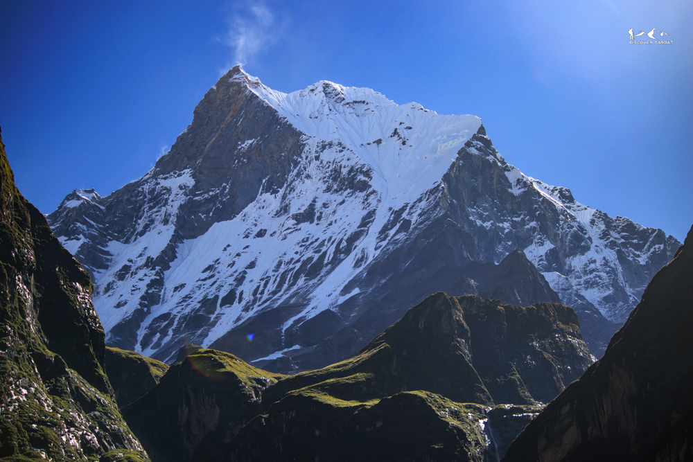
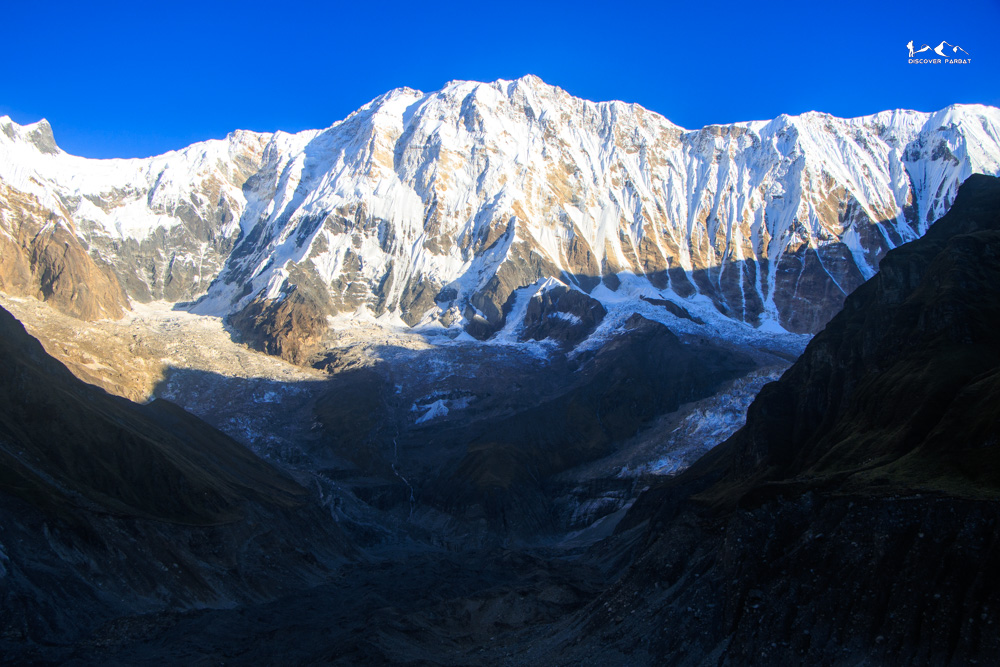
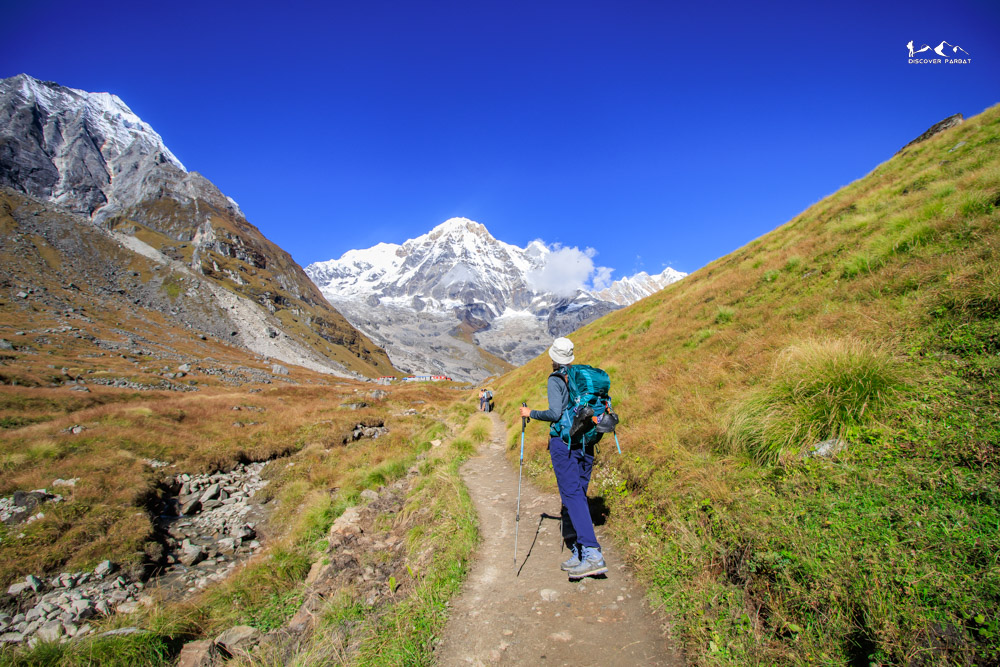
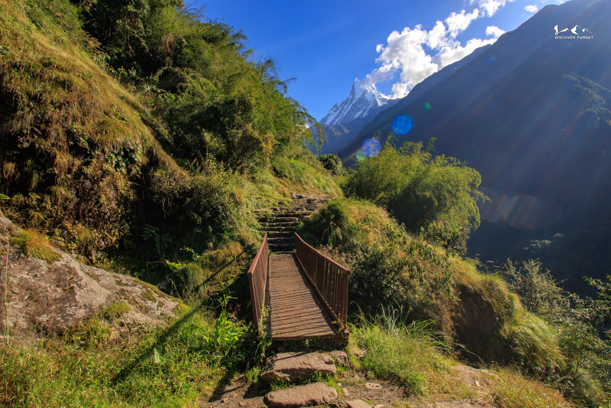
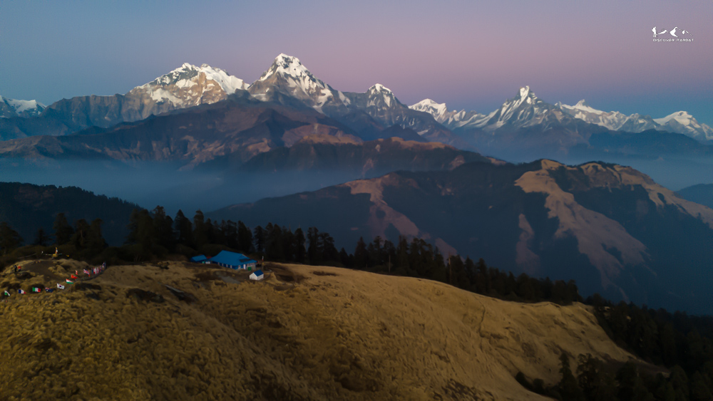
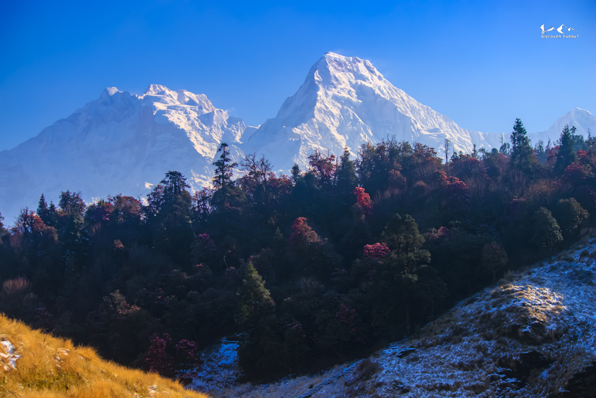
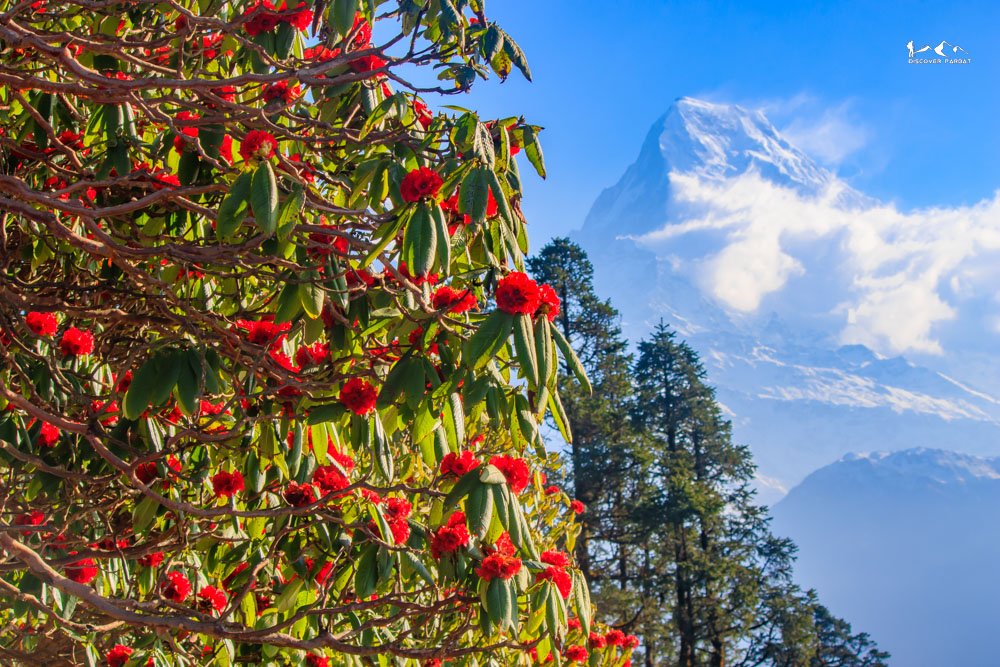

Trek throudh the gorge of Modi Khola to Annapurna Sanctuary











Photo GalleryThe 10 Days Annapurna Base Camp Trek is one of the most iconic trekking experiences in Nepal, offering a complete journey into the heart of the Himalayas. This carefully designed route begins with a scenic drive from Pokhara to Banau via Kushma, gradually transitioning from road access into peaceful hiking trails that pass through authentic villages and forested hillsides.
Unlike the standard approach, this itinerary follows a unique and diverse route through Sarga and Kokhe Danda, allowing trekkers to experience quieter sections of the Annapurna region before connecting to the classic trail. These early days provide a more immersive introduction to local life, terraced farmlands, and traditional settlements, while also offering wide-angle Himalayan views away from the busier trekking corridors.
The trail then reaches the famous Poon Hill (3,210m), one of the most celebrated viewpoints in Nepal. From here, trekkers are rewarded with a breathtaking sunrise over the Annapurna and Dhaulagiri ranges, with peaks like Annapurna South and Machhapuchhre glowing in golden light. This section offers a perfect blend of accessibility and unforgettable mountain scenery.
As the journey continues, the trail descends and reconnects with the main Annapurna Base Camp route at Chhomrong, a beautiful Gurung village perched on a hillside with dramatic views. From here, the landscape begins to change significantly as you move deeper into the Annapurna Sanctuary, passing through dense bamboo forests, river valleys, and high alpine terrain via Himalaya.
The highlight of the trek is reaching Annapurna Base Camp (4,130m), a spectacular natural amphitheater surrounded by towering snow-capped peaks. Unlike other viewpoints, Annapurna Base Camp sits within a high glacial valley, offering a rare 360-degree panorama where mountains such as Annapurna I, Annapurna South, Hiunchuli, and Machhapuchhre rise dramatically on all sides. This unique perspective—being inside the mountains rather than viewing them from a distance—is what makes this trek truly unforgettable.
Historically, the Annapurna Base Camp Trek was completed as a full camping expedition, with trekkers carrying tents and supplies through remote terrain. Over the years, the development of teahouses and lodges along the route has made it more accessible, transforming it into one of Nepal's most popular trekking routes while still preserving its natural beauty and cultural richness.
Due to its popularity, the trail can be busy during peak trekking seasons such as spring (March–May) and autumn (September–November). However, the diversity of landscapes, well-established infrastructure, and consistent mountain views make it a highly rewarding experience despite the crowds.
The return journey includes a relaxing stop at Jhinu Danda, where natural hot springs by the riverside provide the perfect opportunity to unwind after days of trekking. This final highlight adds a refreshing and memorable end to the adventure before heading back towards Pokhara.
Overall, the Annapurna Base Camp Trek is ideal for trekkers seeking a balanced Himalayan experience—combining cultural immersion, diverse landscapes, and close-up mountain views. With its unique route variation via Kokhe Danda and Poon Hill, this itinerary offers both originality and the classic beauty that has made Annapurna Base Camp one of the best trekking destinations in the world.
You want to reach Annapurna Base Camp via a more unique, less-travelled approach through Kokhe Danda and Poon Hill
You want the full Himalayan experience — forests, ridgelines, valleys, sanctuary, and hot springs — in one journey
You're comfortable with 10 days of consecutive trekking including one day reaching 4,130m altitude
You dream of standing inside a 360-degree amphitheater of towering Himalayan peaks
You have less than 10 days — this is a full itinerary and cannot be meaningfully shortened
You're prone to altitude sickness or have not acclimatised at altitude before — 4,130m requires solid preparation
Today, we initially drive to Banau village, with a short tea break at Kushma. It is around 75KM which takes two and a half hours of driving. From Banau we start hiking through ridge to Haljure, where we stop for lunch. After lunch, the hike through ridge continues, we then reach Lespar. From Lespar, we start climbing again to reach Sarga Camp and Homestay, our accomodation for tonight.
Sarga is a beautiful quite accomodation amidst the forest.
After breakfast, we start our hiking. The first half today is a bit steep as we gain around 650m in elevation before lunch. After reaching Jaljala, 2900m, we start seeing the snowcapped peaks. From here, Dhima Danda is still an hour more hike, where we stop for lunch. From here, it is mostly flat or gradual uphill and we gaon another 250m, before reaching Kokhe Danda. The trail passes through beautiful Rhododendron an Oak forest.
Today, we wake up early for the sunrise view from Kokhe Danda. During clear weather, we see peaks from Annapurna, Dhaulagiri, Mansiri and Langtang range.
The hike to Ghorepani via Poonhill passes through a beautiful ridgeline with view of Dhaulagiri at left and Annapurna at right side. It takes around 4 hours but we can make a detour to Kalidaha, a small pond just five minutes below the main trail. It gives stunning views of reflection of Nilgiri, Annapurna South and Annapurna I. We stop for a short tea break at Tinpokhare from where its 30 minutes uphill to Poonhill. Eventually, we descend down on the stone steps leading to Ghorepani.
We do not climb to Poonhill today unlike others. After breakfast, we hike towards Deurali, over a ridge. After half an hours, there is a point from where the view is equivalent to that of Poonhill. After reaching Deurali, we start descending down to Banthati, where we stop for a lunch break. We then further descend down, reaching a rivulet, from where we go uphill for another 30 minutes to reach Tadapani. Todays trail is also through Rhododendron and Oak forest.
We can see a closeup view of Annapurna South and Hiunchuli from Tadapani.
After having breakfast, we start hiking downhill to Chuile and then to Komrong Khola, stream. From there, we start climbing up again and then gradual uphill until Chhomrong. Here, we have lunch. Then we follow the stone steps leading down to Chhomrong Khola, we cross a suspension bridge. Then we start our ascent to Sinuwa, where we stay overnight.
Initially, we climb up to Upper Sinuwa, gaining around 200m in terms of elevation. From here, we go mostly flat or gradual uphill for the next hour. The trail gives beautiful view of Mount Fishtail. We then descend down to Bamboo. From here, we start ascending up again. At Dovan, we stop for lunch. From here, we start going uphill again passing Upper Dovan, a beautiful temple by a waterfall and then eventually reach Himalaya.
We start our hike after breakfast. We ascend up listening to the sounds of Modi River as we follow her all the way upto Annapurna Base Camp. We stop at Deurali for a teabreak and then climb up to Machhapuchhre Base Camp, where we have lunch. From MBC, its another 1.5/2hrs uphill to Annapurna Base Camp. From MBC onwards, we see 360 Degree stunning views of snowcapped peaks of Annapurna Range.
We can however chose to stay overnight at MBC as well. It totally depends on your health condition, on how you feel with the elevation. In this case, we hike to ABC the next morning for sunrise.
We wakeup early to catchup the sunrise views. The Annapurna I, Moditse, Tharpu Chuli would be painted golden. We see another stunning perspective of Mount Fishtail or Machhapuchchre.
After breakfast, we start descending down to Bamboo. We follow the same trail as of past days, hiking just next to Modi River. We stop for lunch at Himalaya and descend further down to Bamboo, where we stop overnight.
We start our hike after breakfast as usual. We initially climb up in the stone steps and after an hour, we go mostly flat or gradual downhill to reach Upper Sinuwa. From here, we start descending to Chhomrong Khola via Sinuwa. After crossing suspension bridge over Chhomrong Khola, we follow the stone steps leading all the way to the top of village. We stop for the lunch and later descend down on the stone steps to Jhinu Danda.
Today, we can visit the hot springs which is half an hour hike away from our Teahouse. After 9 days of hiking through the Himalayas, we can let our body recover with a dip in the hot springs.
Today is a very short day in terms of hiking hours. We cross the suspension bridge over Kimrong Khola and reach Samrung after 30 minutes of hiking. From here, we take a Jeep which will take us to Pokhara. It will be a total of around 3 hours of scenic drive.
Our 10 Days Trek then ends here.
The trek is rated Moderate and is achievable for motivated first-timers with a good base of fitness. The 10-day duration means your body has time to adjust gradually. The most demanding stretch is Days 6–7, when you're gaining altitude into the Sanctuary and pushing to 4,130m. If you can handle 6–7 hours of walking on consecutive days and are comfortable at altitude, this trek is within reach. We recommend a few weeks of regular walking or cardio training before departure.
Most ABC trekkers start from Nayapul or Ghandruk and follow the same well-worn path. Our route begins in Parbat, passing through the hidden trails of Sarga and Kokhe Danda before crossing via Poon Hill. This means your first two days are on quiet, less-travelled paths with wide Himalayan views — a very different introduction to the mountains. You join the classic route at Ghorepani with a fresh perspective and fewer crowds in your legs.
The maximum altitude is 4,130m at Annapurna Base Camp. Acute Mountain Sickness (AMS) is possible above 3,000m and should be taken seriously. Common symptoms include headache, fatigue, nausea, and dizziness. Our itinerary is designed to gain altitude gradually, and your guide is trained to monitor for symptoms. If you feel unwell, descending is always the right call — we will fully support that decision. Travel insurance covering mountain evacuation is strongly recommended. Stay hydrated and never rush the ascent.
Yes — this is entirely your choice and we build flexibility into Day 7 for exactly this reason. If you're feeling the altitude or tired after the climb to MBC, you can rest there overnight and hike to ABC the following morning for sunrise, which many trekkers consider the most magical experience of the entire journey. Your guide will assess conditions with you on the day and support whichever option suits you best.
Teahouses along the lower sections (Ghorepani, Tadapani, Chhomrong) are comfortable with private rooms, decent food, and sometimes hot showers for a small fee. As you move deeper into the Sanctuary — Himalaya, MBC, ABC — facilities become more basic. Rooms are small, heat is limited at altitude, and menus are simpler. That's part of the experience. A warm sleeping bag (rated to -10°C is ideal for ABC nights) and a sleeping bag liner are essential above Chhomrong.
October and November are the most popular months — post-monsoon clarity means exceptional visibility at ABC and the trail is dry and firm. March to May is equally good with rhododendrons in bloom through the forest sections and reliable summit views. December and January are feasible but cold, especially at altitude — ABC nights can drop well below freezing. The monsoon season (June to September) brings heavy rain into the Sanctuary and is generally not recommended for this route.
Yes — an Annapurna Conservation Area Permit (ACAP) and a TIMS card are both required. Both are included in your trek cost and arranged by us in Pokhara before departure. You don't need to visit any offices or queue for permits yourself.
Jhinu Danda's hot springs are a natural riverside pool fed by geothermal water — the perfect reward after 9 days on the trail. They're about 30 minutes' walk below the village, set beside the Modi River. After the cold nights at altitude, soaking in warm water surrounded by forest and river sounds is genuinely restorative. There's a small entry fee payable on the day.
Key items: sturdy trekking boots with ankle support, a quality sleeping bag rated to at least -10°C for ABC nights, a down jacket, waterproof outer shell, warm base layers, trekking poles (essential for the long descents), a headlamp, reusable water bottle, water purification tablets, sunscreen, sunglasses, and a daypack of 25–30L. Your porter will carry the main bag. We'll send a full detailed packing list after booking.
If you need to descend early for any reason — altitude sickness, injury, or personal circumstances — there is no refund on the remaining trek cost. However, we will arrange comfortable accommodation for you in Pokhara for the number of nights that remain on your itinerary at no extra charge. Please see our full Cancellation Policy for complete details. This is also why comprehensive travel insurance covering mountain evacuation is strongly advised before you depart.